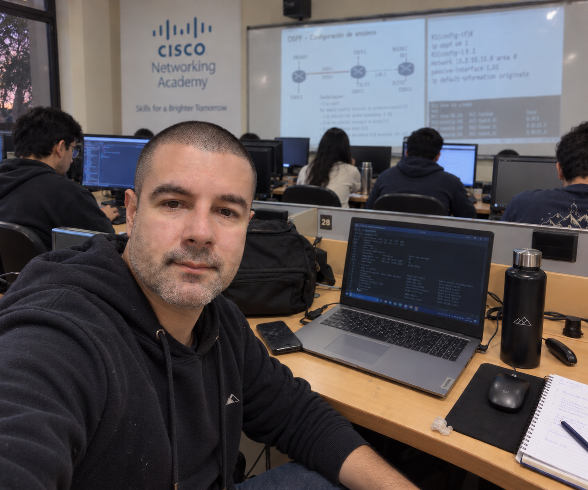
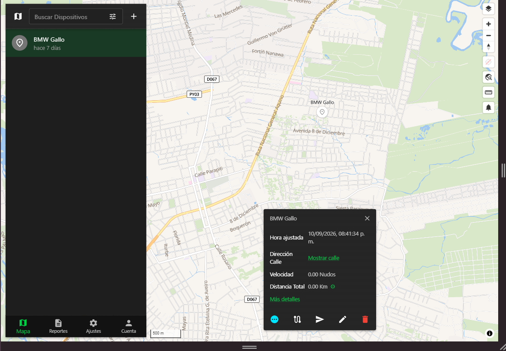

Desarrollador de software enfocado en aplicaciones web y sistemas empresariales. Tengo experiencia real con Python, Django, PostgreSQL y Docker, desde el backend y las APIs hasta el despliegue en infraestructura Linux.

TECNOLOGÍAS
Desarrollo backend, automatización y aplicaciones web.
Aplicaciones web, paneles de gestión y APIs backend.
Modelado de datos relacionales, consultas SQL y persistencia.
Estructura semántica y accesible para aplicaciones web.
Interfaces responsive y diseño adaptable a cada dispositivo.
Interactividad, consumo de APIs y lógica del lado del cliente.
Contenedores, entornos reproducibles y despliegue con Docker Compose.
Control de versiones, ramas y flujos de trabajo con repositorios.
Diseño y consumo de APIs, autenticación e intercambio de datos con JSON.
Administración de servidores, despliegue y configuración en VPS.
Fundamentos de networking, CCNA1, direccionamiento y conectividad.
Integración de dispositivos GPS, Traccar y procesamiento de telemetría.
PORTFOLIO

Plataforma de monitoreo y gestión de vehículos
SamaGPSpy es una plataforma de monitoreo y gestión de vehículos orientada a transformar los datos enviados por dispositivos GPS en una solución web para seguimiento, telemetría, alertas y gestión de flotas.
Los datos recibidos desde los dispositivos GPS se procesan con Traccar y se integran en un backend propio desarrollado con Django, que los almacena en PostgreSQL y los expone al panel web mediante APIs y JSON. El proyecto continúa en evolución.
GPS → Traccar → Backend Django → PostgreSQL
ACERCA DE MÍ
Soy desarrollador de software orientado a construir aplicaciones web y sistemas que resuelven problemas reales. Trabajo principalmente con Python y Django en el backend, PostgreSQL como base de datos relacional y Docker para entornos de desarrollo y despliegue.
Tengo formación y experiencia práctica en programación, desarrollo web, redes y sistemas. Me interesa especialmente construir herramientas que combinen software, infraestructura y necesidades concretas de negocio: desde APIs y paneles de administración hasta servicios desplegados en servidores Linux.
Actualmente estoy enfocado en desarrollo web con Django, PostgreSQL y Docker, diseño de APIs REST, administración de Linux y VPS, telemetría GPS y automatización de procesos. También tengo experiencia previa con Flask, framework con el que construí mis primeros sistemas web.
Construcción de SamaGPSpy, una plataforma de rastreo y telemetría GPS: backend en Django con PostgreSQL, frontend en JavaScript, despliegue con Docker en servidores Linux e integración de dispositivos GPS.
Formación en desarrollo web con Python y JavaScript: Django, bases de datos SQL, APIs, autenticación y fundamentos de despliegue.
Fundamentos de ciencias de la computación: algoritmos, estructuras de datos, memoria, Python y C. Base conceptual del desarrollo de software.
Direccionamiento IP, switching, routing y modelos de red aplicados a infraestructura, conectividad y estabilidad de sistemas.
Primeros sistemas web con Python y Flask junto a frontend moderno, orientados a procesos y servicios de negocios reales. Punto de partida de la transición hacia backend, infraestructura y sistemas empresariales.
FORMACIÓN CONTINUA
Harvard University / edX
2026
Harvard University / edX
2026
Cisco
2024
CONTACTO